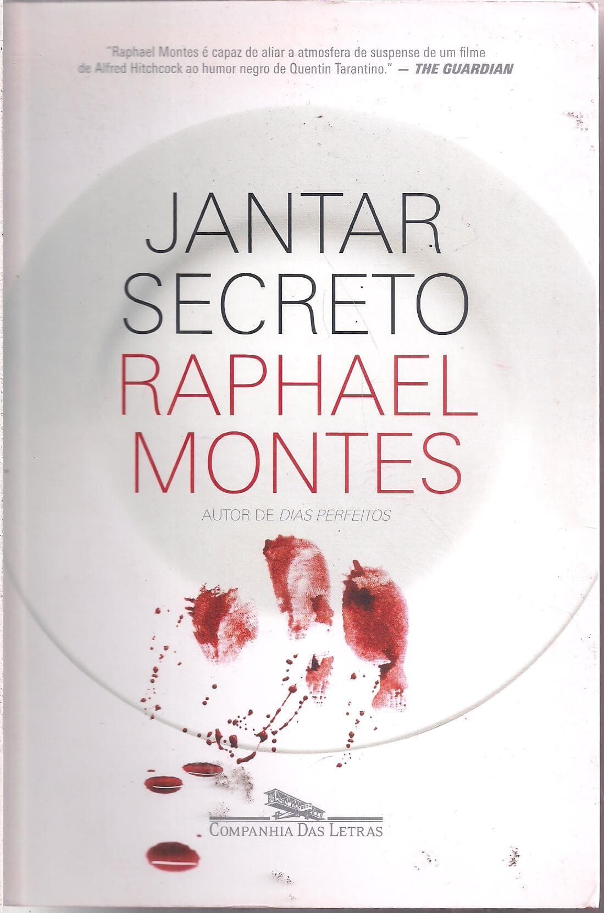

Escrito por Raphael Montes, é um thriller nacional que mistura suspense, mistério e terror em uma história perturbadora e cheia de reviravoltas. O livro acompanha quatro amigos que deixam o interior do Paraná para estudar no Rio de Janeiro e, diante de dificuldades financeiras, acabam se envolvendo em uma situação muito mais perigosa do que poderiam imaginar.
Com uma narrativa intensa e provocadora, Raphael Montes explora os limites da amizade, da ambição e das escolhas humanas. Ao longo da história, o leitor é levado a questionar até onde alguém estaria disposto a ir quando dinheiro, curiosidade e desejo de poder entram em jogo.

Os personagens de Jantar Secreto são quatro amigos que carregam personalidades e histórias bastante diferentes entre si. Dante, Hugo, Miguel e Leitão se conhecem desde a infância e acabam enfrentando juntos as dificuldades da vida no Rio de Janeiro. Enquanto Dante é mais responsável e racional, Hugo possui uma personalidade impulsiva e ambiciosa; Miguel se destaca por seu jeito mais reservado, e Leitão traz uma postura descontraída e irreverente ao grupo. Conforme a história avança, as diferenças entre eles ficam cada vez mais evidentes, colocando à prova a amizade e os limites de cada um.
Raphael Montes é um escritor, roteirista e apresentador brasileiro, conhecido principalmente por suas obras de suspense, mistério e terror. Nascido no Rio de Janeiro, em 1990, começou a escrever ainda jovem e publicou seu primeiro livro, Suicidas, em 2012.
Entre suas obras estão Suicidas, Dias Perfeitos, O Vilarejo, Jantar Secreto e Uma Família Feliz. Além da literatura, Raphael também atua como roteirista e participou da criação de produções para televisão e streaming.